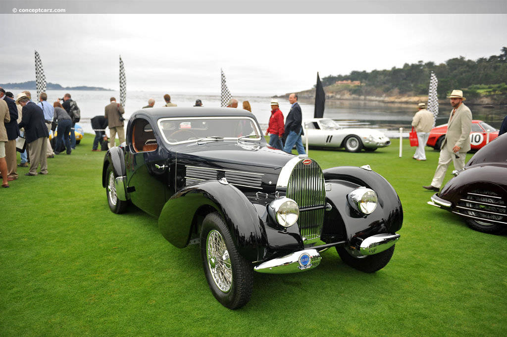

HISTORIA DEL AUTOMOVIL

La historia del automóvil se encuentra estrechamente relacionada con la difusión de la máquina de vapor y las tentativas de algunos por adaptar este nuevo descubrimiento a un medio de transporte, tal como intentó hacerlo Nicolas Cugnot en 1769, quien construyó un automotor de tres ruedas, impulsado por vapor que proveía una marmita adaptada a la parte delantera. Esta rudimentaria máquina alcanzó velocidades de hasta 14,5 km/h, pero era prácticamente imposible de conducir.
Muchos fueron los intentos por crear un automotor funcional a base de vapor, sin embargo, sólo hasta la aparición del motor de combustión interna esto se hizo posible. El primero en adaptar está energía de propulsión a un carro fue el ingeniero francés Étienne Lenoir, quien patentó en 1860 un motor que funcionaba haciendo arder gas dentro de un cilindro y que probó con éxito en un vehículo capaz de recorrer los bosques de Vicennes.
Es 1886 el año que puede considerarse como el del nacimiento del automóvil moderno, cuando el alemán Karl Benz presentó en público su vehículo propulsado con un motor monocilíndrico de gas, vehículo patentado en la Oficina Imperial de Patentes de Berlín, con el número 37435, la fecha de este acontecimiento fue el 29 de enero de 1886. No obstante, vale la pena mencionar que en el verano del mismo año, Gottlieb Daimler y Wilhelm Maybach, también alemanes aplicaron un motor similar al de Benz a un triciclo de forma exitosa.
Los primeros automóviles funcionales fabricados por Benz y Daimler vislumbraron con éxito una nueva forma de transporte, sin embargo su producción se encontraba lejos de avanzar del nivel artesanal, para tal efecto la intervención de Estados Unidos en la carrera del automóvil fue vital, primero con Ramson Eli Olds quien convirtió a Detroit en la capital del automóvil con su producción de la serie Oldsmobile y luego el gran salto fue el protagonizado por Henry Ford, quien el 12 de Agosto de 1908 finalizó el montaje de su línea de ensamblaje para producir de forma masiva su modelo T, lo que revolucionó la industria del automóvil impulsándolo hacia la popularización.
Los años siguientes a la masificación del automóvil, la industria experimento un gran dinamismo en búsqueda del perfeccionamiento del vehículo, algunos de estos aportes son la invención del neumático de aire (Dunlop 1888), la integración del guardabarros a la carrocería del auto (1930), se introduce la tracción delantera (Citroën 1934), se utiliza el convertidor catalítico para reducir la contaminación (1979) e incluso se incorporan mejoras sustanciales en seguridad, como el uso del airbag (1990).